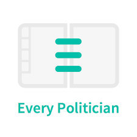

The Overall Process
We wanted to explore whether there is a relative age effect in politics like there is many other disciplines such as academia and sports.
This is important to investigate for policy reasons, for career reasons, and also just for interest
But how does one start to answer this question?
- Collecting Data
The data we wanted to collect:
• The name of every politician in as many countries as possible
• The birthday’s of each politician
• The country each politician was from
• The university each politician attended
To collect the data we needed, we combined various sources to “put together” the database we could use for our analysis
This, as you could imagine, was harder than expected
We mainly used data from the following: • EveryPolitician
• UN Database
• Wikipedia
• They Work For You
But also from:
• UNDP for HDI, GII, MYS
• ONS for UK births data
• International Institute for Democracy and Electoral Assistance
• V-Dem Institute for Electoral democracy index
• Google Public Data for hemispshere analysis
EveryPolitician
EveryPolitician is an initiative to improve the transparency and accountability in politics. It is an open format, accesible source that incldues almost all present-day national-level legislators
The core dataset was obtained from EveryPolitician through a two-step process. EveryPolitician provides a machine-readable ‘index file’ in JSON format which contains details about and links to the data for each individual legislature. The links to all the datasets were collected and these were then extracted using the ‘get’ function of the module ‘requests’, similarly to web scraping. The data was obtained in JSON format, converted to a ‘pandas’ dataframe, and saved to a csv file for later use, since the data collection functions took a long time to run.
To check out the website please follow the link:
UN Database
For completeness, we used the UN database to fill in the gaps of our datasets.
Wikipedia
As a free encyclopedia, Wikipedia has a wealth of information that is useful to what we are looking for. Therefore, we used the Wikipedia API to access data from their databases for our UK focused analysis.
For our UK-focused analysis, we used the Wikipedia API and BeautifulSoup-aided HTML-scraping to collect data on all sitting UK MPs (from each of the England, Wales, Scotland and Northern Ireland pages) - we chose this source as it provides alma mater and birth date in a scrapable fashion (although we did encounter some roadblocks in the process!) However, Wikipedia allows for public contributions so to ensure data quality we cross-checked this Wikipedia data with another source, to limit errors in the dataset. This was indeed the case given that the data initially included MPs that had resigned/passed away and (once we accounted for this) was missing an MP!
- TheyWorkForYou
To identify the missing MP, we cross checked using a website called TheyWorkForYou that sources its data directly from official parliamentary sources.
- Data Cleaning
After collecting the relevant data we needed, we cleaned the data by remvoing redundant, missing, duplicated, and uncessary data.
But specifically to correct for a skew…
Beyond the initial data cleaning expected to make the dataset usable in analysis, we needed to perform some operations before the EveryPolitician dataset was fit for purpose. Initially, the proportion of politicians with a January birthday was more than 4 times greater than any of the other months. Upon deeper analysis, this was attributed to the standardised value of 1 January being assigned to politicians for which birth month data was not available (as the pd.to_datetime function defaulted to this when no day/month information is provided). We identified this phenomenon as the January skew. After exploring a few methods to address this, we chose to omit outlier countries that had an unreasonable number of 1 Jan values. The threshold for the omission was computed by excluding countries where the ratio of records on January 1st was more than 10 times the expected ratio of records for Jan 1st - seven countries for which this threshold was violated were excluded from the analysis, including Syria and Cameroon for which the proportion of people born on 1 January were 98.2% and 26.8% respectively. This differs greatly from the global proportion of 8.97% of births in January. Hence such results were removed from our birth month analysis to safeguard data quality, and then we were able to perform our analyses.
- Data Analysis and Exploration
Once we had tidy dataframes, and clean data, we started to plot our data using the plotnine package.
From this we started to detect patterns and trends that we discuss in each section of the website
To begin answering our question: We first wanted to group MPs by birth month as this is the most obvious place to start
This gives us an idea of the distribution of the MPs’ birth month as the page ‘Exploring Birth Month’
We discuss the trends we observed from our plots but we realise that there may be underlying patterns that just plotting the birth month of all politicians may not uncover
Therefore we decided to compare developing countries to developed countries
This was slightly problematic as many of the developing countries had messy data
During the birth month analysis process, we noted (especially for some of the grouped analyses) that data for many less-developed countries often contained far fewer entries and was generally less complete. For instance many countries in Sub saharan Africa such as Eritrea and Sudan as well as some in Asia and Latin America like Myanmar and Venezuela. When performing gender analyses, we also noted the impact of data for historical MPs dampening the observed results. Therefore, due to these data quality issues (and facilitating deeper analysis of certain factors that the EveryPolitician dataset did not allow for, such as alma mater), we decided to perform a deep dive into the UK. From a data science perspective, focusing on one country allows us to address concerns about variations in data availability, quality and consistency across regions. From a personal perspective, we were the most familiar with universities from the UK given our attendance to one and hence thought it most interesting and reasonable to investigate.
For this UK-focused analysis, we used the Wikipedia API and BeautifulSoup-aided HTML-scraping to collect data on all sitting UK MPs (from each of the England, Wales, Scotland and Northern Ireland pages) - we chose this source as it provides alma mater and birth date in a scrapable fashion (although we did encounter some roadblocks in the process!) However, Wikipedia allows for public contributions so to ensure data quality we cross-checked this Wikipedia data with another source, to limit errors in the dataset. This was indeed the case given that the data initially included MPs that had resigned/passed away and (once we accounted for this) was missing an MP!
Using the TheyWorkForYou added data, cross referencing produced 23 anomalies between the dataset, however, given the nature of similar names (eg. Jon Ashworth vs Jonathan Ashworth) we needed to find the missing MP manually from the anomaly list identified by the regex search command. After correcting for this the dataset was ready for use containing data on all 650 MPs in the UK (i.e across Wales, Scotland, England and Northern Ireland)
To add depth to our analysis
To add explore other disparities in politics, we delve deeper into gender disparities.
As with most professions, females tend to be significantly underepresentated in comparison to males, thus we decided to investigate whether we also see disparities in politics…spoiler alert, we do!
Just doing that extra bit…
As an addition, we investigate other paths such as first letter of a politicians name and their zodiac (which is purely for entertainment purposes)